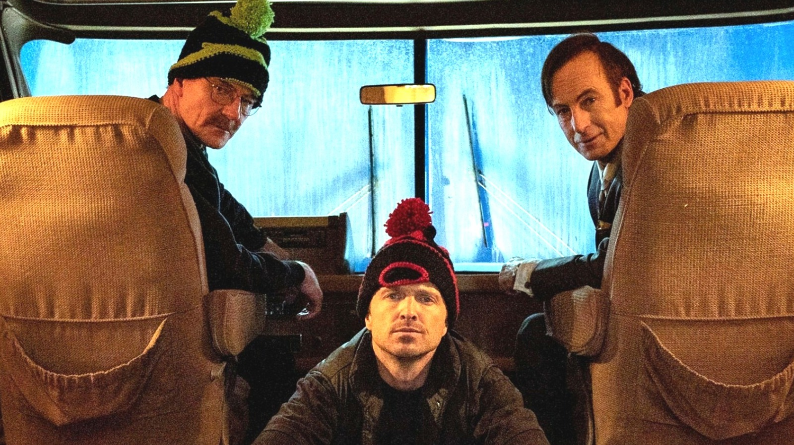

James Morgan "Jimmy" McGill Alias: Saul Goodman, Gene Takavic reside en Albuquerque, Nuevo México Profesión: Abogado criminalista Lema icónico: "Better Call Saul"
Saul Goodman, nacido como Jimmy McGill, es un abogado carismático y astuto conocido por su enfoque poco convencional y, a menudo, moralmente cuestionable de la ley. Comenzó su carrera en el mundo legal como Jimmy, un abogado con ideales humildes, pero su frustración ante la falta de éxito y reconocimiento lo llevó a transformarse en Saul Goodman, un personaje colorido que se especializa en defender criminales y encontrar soluciones legales creativas, por más dudosas que puedan ser.
Antes de ser conocido como Saul, Jimmy tuvo una vida complicada. Creció en Cicero, Illinois, donde desarrolló una inclinación por pequeños delitos y fraudes, ganándose el apodo de "Slippin’ Jimmy." Sin embargo, decidió cambiar su vida y convertirse en abogado, motivado en parte por su deseo de ganarse la aprobación de su hermano mayor, Chuck McGill, un abogado respetado.
En Breaking Bad, Saul Goodman es el abogado que Walter White y Jesse Pinkman contratan para ayudarlos con sus problemas legales mientras expanden su imperio de metanfetaminas. Saul se convierte en una figura esencial para ellos, proporcionando conexiones con el bajo mundo del crimen y soluciones ingeniosas para cubrir sus rastros. Aunque es cómico y extravagante, también muestra un lado pragmático y perspicaz, que lo hace indispensable para los protagonistas.
La transformación de Jimmy McGill en Saul Goodman es explorada en profundidad en la precuela Better Call Saul, donde se revela su lucha por equilibrar sus ideales y su ambición. A lo largo de la serie, se exploran sus relaciones personales, especialmente con Kim Wexler, una colega abogada y su interés romántico, así como con su hermano Chuck, cuya influencia define gran parte de su camino.
Eventualmente, tras los eventos de Breaking Bad, Saul adopta la identidad de Gene Takavic para esconderse del FBI, trabajando como gerente de un Cinnabon en Omaha, Nebraska. A pesar de sus esfuerzos por mantenerse bajo el radar, su pasado sigue acechándolo.
Saul Goodman aporta un equilibrio de comedia y profundidad emocional tanto en Breaking Bad como en Better Call Saul. Su ingenio, carisma y vulnerabilidad lo convierten en uno de los personajes más complejos y queridos del universo creado por Vince Gilligan. Representa cómo las elecciones en la vida, por pequeñas que sean, pueden llevar a transformaciones inesperadas y, a menudo, inevitables.